1
Read the counters
The ring shows Right now. The tiles count Checked in, On break, Late, Absent, On leave and Geofence flags.
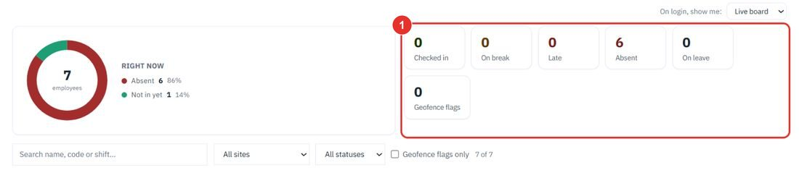
See who is in, on break, late or absent right now, then read the month for payroll: days present, hours, late marks, leave and overtime. Each step shows the exact button to click.
Want the full chapter? Solution Guide, chapter 4: Workforce (PDF) · All documentation
Do this during the day. Open app.bpmsquare.com/wfm/live-board. It shows who is in, on break, out, late or absent, per site, and refreshes by itself.
The ring shows Right now. The tiles count Checked in, On break, Late, Absent, On leave and Geofence flags.

Use the All sites list to look at one location. No site assigned lists people without a home site.
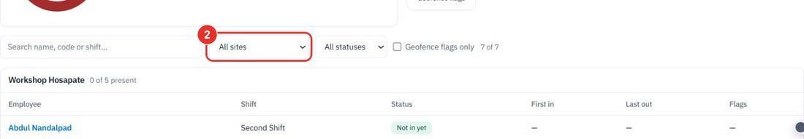
In, On break, On leave, Absent, Checked out or Not in yet.
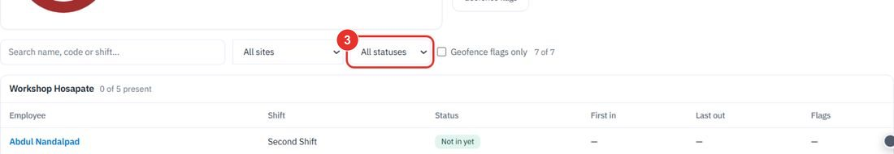
It keeps only the rows that carry a geofence flag.
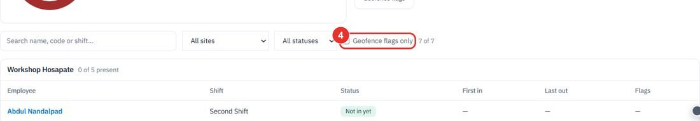
The tables below list Employee, Shift, Status, First in, Last out and Flags for each person.
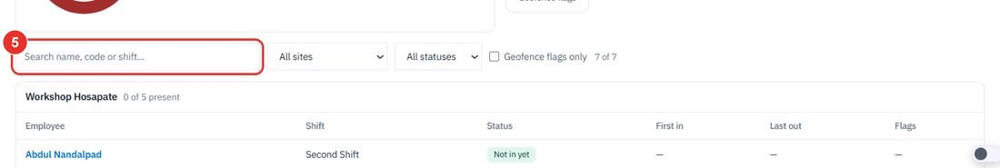
The On login, show me list has two choices: Live board and Dashboard.
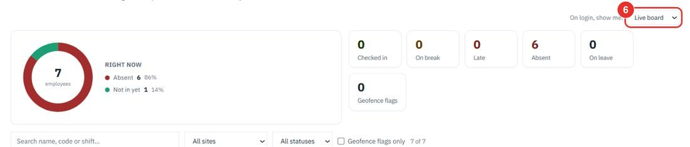
Click anywhere on a person's row, except the name, which opens their page. The row opens to today's punches with selfie and location, newest first. A door-tablet punch reads Recorded at the kiosk at the site, because a tablet has no GPS. The Live board shows today only. For an earlier day, follow See a past day's punches below.
Do this at month end. Open app.bpmsquare.com/wfm/summary (Time Summary). It gives per-employee attendance for the CA: days present, hours, late marks, leave, holidays and night-shift allowance.
The Monthly summary tab is open first. The month starts on the current one.
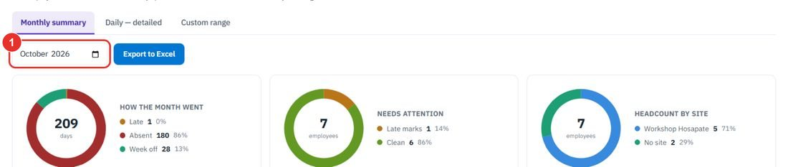
How the month went counts days late, absent or on week off. Needs attention counts people with late marks. Headcount by site splits people by site.
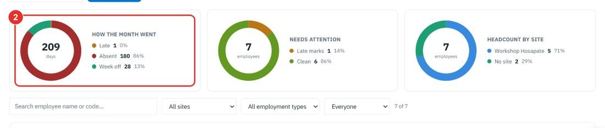
Type a name or code.
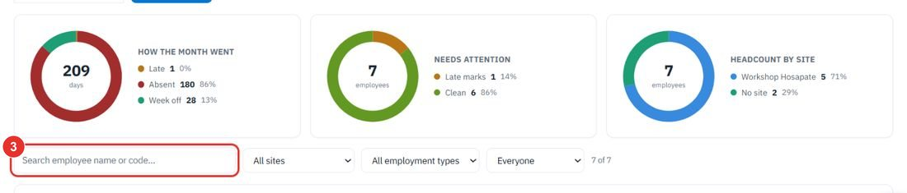
Use All sites to look at one location. The next list filters by All employment types: Full-time or Contractor.
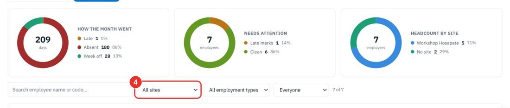
The last list holds Everyone, Late marks, Incomplete days, Unpaid leave and Clean.
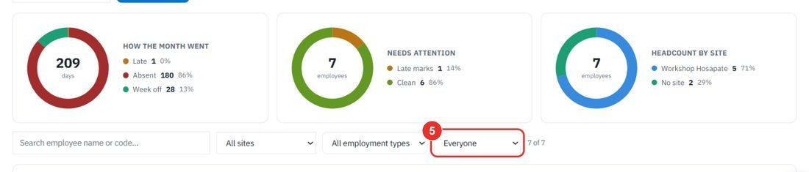
It downloads the month as an Excel file. The table has columns Days present, Absent, Hours, Late marks, Paid leave, Unpaid leave, Holidays, Night shifts, OT hrs and Incomplete. This guide does not click it.
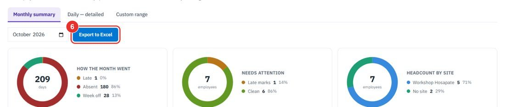
Do this when the month is too wide, or when you need to see every punch.
The rings and filters stay. Below them, each person is a row you can open.
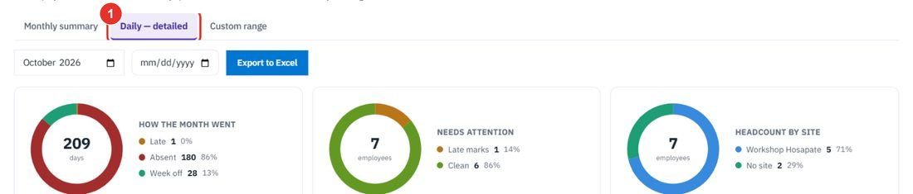
The date field next to the month is for picking a day.
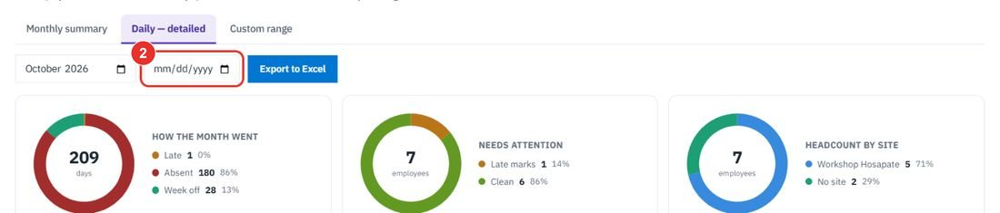
It opens a table with every day: Date, In, Out, Breaks taken, Break total, Gross, Total worked and Status. Total worked is check-out minus check-in minus breaks.
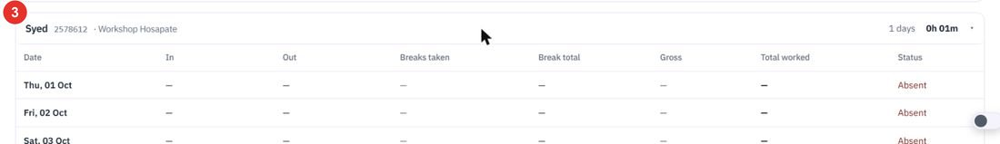
Use it for a period that is not a calendar month.
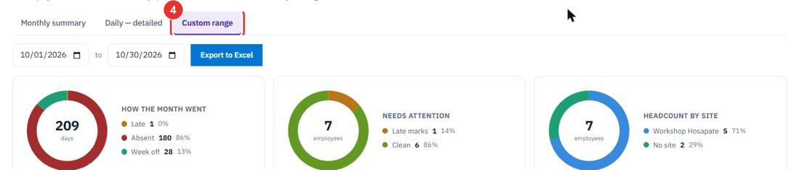
Type the first and last day. This screen shows the summary table only. For the day-by-day breakdown of the range, use Export to Excel.
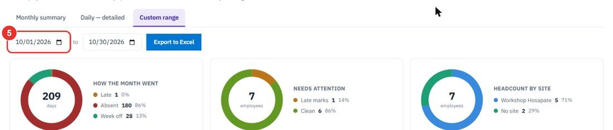
Do this once, as an admin, when your accountant wants the payroll report by location or a minimum for overtime. The options are on the Rules tab of Settings → Workforce.
It is a switch on the Rules tab of Settings → Workforce. On, the monthly Excel export gets one sheet for each location and employment type. Off keeps the usual sheets. This guide did not switch it on.
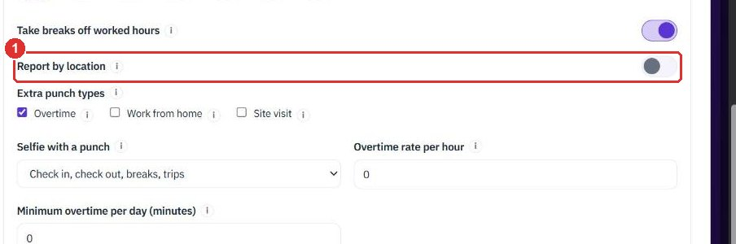
Each sheet is named <Location> - <Type>, for example Workshop - Full-time. A person with no home site goes to No location - <Type>. Every sheet gains Sl No, a serial number, and Category, the employment type. It also gains Standard Hrs, the shift length on each day the person was expected to work, and Actual Hrs, hours worked less standard. A minus sign marks time below standard, for example -01:30. Weekly offs, holidays and full leave days add no standard hours.
The field shows when Overtime is ticked under Extra punch types. Overtime on a day shorter than this many minutes is shown but not counted or paid. A day at or above it counts in full, not only the part over the minimum. 0 counts everything. This guide did not change it.
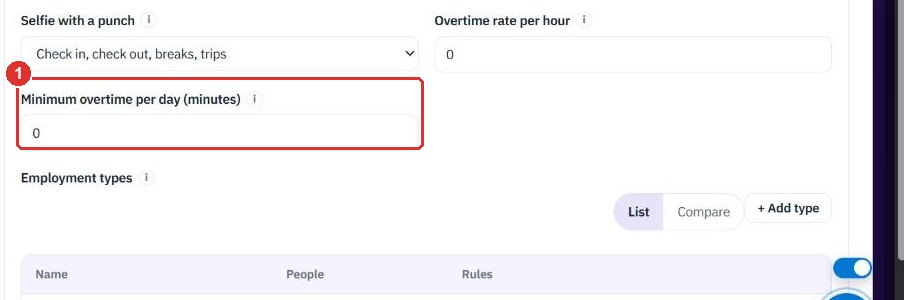
With a minimum set, the export adds an OT not counted column next to the overtime hours. The day's status reads OT below minimum, not counted.
Save is at the top right of the page. The Rules, Leave, Alerts and Billing tabs save together. The next export uses the new options.
When you save an employee with a type the workspace has not set up, the message names the types you can use: Employment type 'x' is not set up. Add it in Settings > Workforce or use one of: …. Add the type under Employment types on the same Rules tab, or pick one from the list.
Do this when you need to check where and how someone punched on an earlier day. Open Workforce, then the employee. You see people in your own scope; an employee sees their own days.
On the employee's page, Attendance lists Daily attendance, one row for every date up to today. Use the month field at the top right of the table to go to an earlier month.
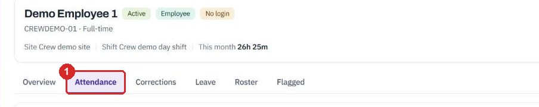
The button is next to Correct. A row opens under the day. Click it again to close. Only one day is open at a time, and changing the month closes it.
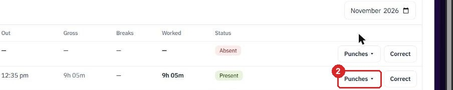
Punches are listed newest first. Each shows the selfie (click it to open it full size), the kind (Check in, Check out, Break start or Break end) and the time. Chips follow: where it came from (Kiosk, Manual or Corrected; a phone punch has none), the site name or Outside geofence, and the face and location flags that apply. Where no selfie was taken, the box reads no selfie.
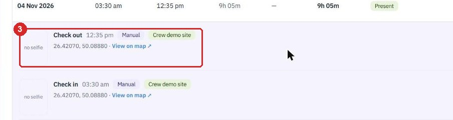
Under the chips is the street address when one is known, the coordinates with their accuracy, and View on map ↗, which opens the spot in a map. Where no address was found, only the coordinates show.
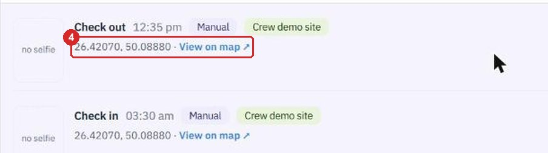
A day without punches says No punches on this day. Absent days, week offs and leave days look like this. Click Punches ▴ again to close the row.
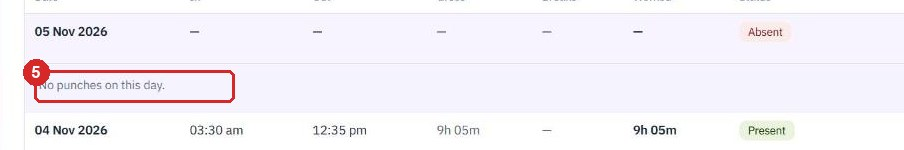
A door-tablet punch has no GPS, because the tablet is a fixed device registered to a site. It reads Recorded at the kiosk at the site name, with the site address and Site location (not a GPS fix) and View on map. A supervisor correction reads Corrected by a supervisor: no location recorded. The amber No location captured appears only on a phone or manual punch that truly has no coordinates. A punch older than the selfie retention period reads Selfie removed after N days in place of the photo; the punch and its location stay.
Twenty minutes on a live workspace, with your files and your team.